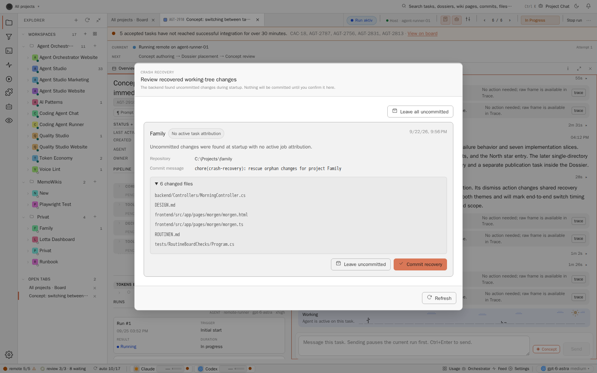
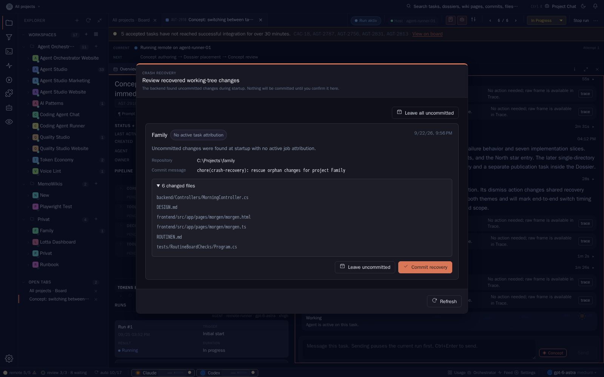

Decision dossier · AGT-2910
Task switch performance
The task's identity, state, execution and working context should be readable within 100 ms. Git, costs, review evidence and long documents should arrive independently.
Evidence
The operator's v0.8.0 incident reports detail calls of roughly 230–2,700 ms, grouped reads of 300–1,000 ms, 68 git config spawns totaling 4,759 ms in one git-index-run, and a 40,345,891 ms spawn after host wake. Those excerpts are supplied evidence. The original daily .api.log.out and its distribution were not available in this checkout. A range cannot establish p50 or p95, and elapsed time across host suspension does not establish CPU use.
The replay reached Windows Stable through the runner's forwarded ports. The version response identifies v0.9.1, commit 09e18909, built at 09:08 UTC. The source walkthrough uses checkout 93d23ac4. This is a later live sample, not a reproduction of the earlier binary. The API cohort is AGT-2797 (backlog), AGT-2736 (progress) and AGT-2878 (human review), ten reads each, from 13:57:28 to 14:00:57 UTC. Services and operator activity continued; no cache or backend was reset.
Request measurements
| Request | Attempts / timeouts | Handler ms | Client total ms | Decoded bytes |
|---|---|---|---|---|
| Detail | 30 / 0 | 486 / 2,183 | 822 / 5,523 | 30,150 / 56,230 |
| Grouped, unconditional | 10 / 1 | 350 / 956 | 5,003 / 9,988 | 2,561,751 / 2,561,881 |
| Grouped, initial ETag | 10 / 2 | 584 / 1,245 | 5,754 / 7,316 | 2,561,751 / 2,561,867 |
The handler figure is Server-Timing: task-op; its endpoint filter ends before JSON serialization and writing the body. Client time includes those costs, transport and waiting. The 2.56 MB grouped payload also crosses the tunnel. Do not subtract these percentiles to estimate a stage or claim the tunnel's delay as workstation latency.
All 30 detail calls exceeded the existing 30 ms handler budget. Three of twenty grouped attempts timed out at 15 seconds. Successful-call percentiles exclude those censored observations and therefore understate all-attempt tail risk. The conditional probe retained its initial validator; eight successes were 200, with two timeouts. It does not prove that fresh ETag reuse is broken.
Stage inventory
Unmeasured cells are unknown, not zero. The following table is the acceptance inventory as well as a statement of what this concept run can prove. Parent and child spans overlap and must not be summed.
| Stage | p50 / p95 | Population / Git count | Evidence and remaining boundary |
|---|---|---|---|
| Navigation to detail content | Unavailable | 0 completed switches; recovery dialog | Linux browser proxy, not full proposed core or workstation latency. See browser capture below. |
| Index lookup, wait and refresh | Unavailable | No stage spans; spawns unknown | FindJob → GetSnapshotPartitions → EnsureFresh can initiate or wait for a scan. |
task.json read | Unavailable | No read spans | Warm indexed lookup can avoid parsing; refresh and BuildLog have additional reads. Do not equate endpoint time with a file read. |
| Prompt, status, log and other sidecars | Unavailable | No per-file spans | GetJobDetail reads several files before responding. |
| Git subprocess work per switch | Unavailable | Unknown spawns per switch | No detail boundary scope or switch correlation in the exposed telemetry. The 68-spawn example is an index run. |
| Integration verdict | 54 / 3,889 ms | 2,000 mixed scopes; 14,686 total spawns | Rolling board/integration-status wall time, including background calls. Not detail-only integration timing. |
| Merge projection | 3 / 182 ms | 905 mixed scopes; 78 total spawns | Rolling board/merge-status, not a switch population. |
| Review projection | Unavailable | No separate stage spans | Detail calls canonical reviewProjection.Read inline. |
| Token summary | Unavailable | No separate stage spans | BuildTokenLookup → WorkspacePerJob is project scoped even for one card. |
| Whole detail handler | 486 / 2,183 ms | 30 requests; Git unknown | Measured task-op, not including result serialization. |
| JSON serialization | Unavailable | No post-result span | The existing timing filter does not isolate this stage. |
| Detail body consumption after headers | 0.24 / 155 ms | 30 requests | Client measurement; buffering means this is not the entire transfer cost. |
| Detail response size | 30,150 / 56,230 bytes | 30 decoded UTF-8 bodies | Size, not milliseconds or compressed bytes. The core proposal is capped at 16 KiB. |
| Markdown conversion / DOM work | Unavailable | No valid switch population | Existing beautiful-results-render measures conversion only; DOM/layout and other renderers remain unmeasured. |
Git accounting
The live one-hour telemetry snapshot, captured at 13:57:27 UTC, reports 933 background index scopes at p50 445 ms and p95 5,354 ms, totaling 29,299 spawns. It also reports zero spawns across 1,514 grouped scopes and zero across ten list scopes. The integration scope is capped at the latest 2,000 samples. These are mixed overlapping scopes; their counts are not additive. No per-switch count can be derived by dividing them by navigation attempts or subtracting successive snapshots.
The source exposes a concrete amplification path: TaskIntegrationStatusService.BuildRepositoryGroups calls GitService.ReadOriginUrlAt for each task with attributed commits, before the reachability-cache lookup. That helper launches git config --get remote.origin.url. Resolving repository identity once per configuration generation is a specific correction. This path is consistent with the 68-config report; attributing every reported spawn to it still requires correlated tracing.
Source findings
AGT-2202 added the integration verdict to detail. The operator also identifies the TaskIndexCache/HEAD memoization work and the 1 September OrchestratorApi performance wave as prior context. Those improvements do not establish a cache-only detail contract: a dirty or expired index still invokes freshness work, while the detail route separately derives projections. A HEAD cache cannot remove a configuration lookup executed before that cache. Exact per-stage savings from those earlier changes are not available here.
| Boundary | Finding | Implication |
|---|---|---|
| Detail endpoint | Reconstructs commits; builds tokens, dependencies, runtime, merge, integration, publish, tests and review before returning. | A cheap identity lookup cannot make the full response cheap. |
| Scanner and index | Cache entry lookup is preceded by freshness policy; full detail opens prompt/status/history/context/log/evidence. | Core needs a new read boundary, not a renamed full-detail call. |
| Git snapshot and tasks domain | Board Git snapshots, change-driven indexing, stale reads and ETag/304 already exist. | Extend their coverage and reduce invalidation cost; do not add another indexer. |
| Selection and prefetch | Source already has a board preview, two-peer prefetch, a 30 s full-detail cache and a response token. Cache hits can still be followed by a full fetch. | Reuse these owners with separate core/resource versions. A new loading shell alone is insufficient. |
Browser evidence
The real browser session reached this task, but the replay stopped at its preflight visibility check because a shared crash-recovery dialog covered navigation. The final saved replay did not attempt a pager click. No recovery was committed or dismissed. Its screenshot proves the obstruction in this session; it does not prove that all operator sessions are blocked. Zero switches completed, so no browser p50/p95, markdown p50/p95 or full-core paint claim is published. The page emitted no JavaScript page errors during the capture. The initial Stable JavaScript bundle was 27,271,729 bytes; its tunnel transfer is cold startup and is outside the API handler measurements.

Light · Real
Dark · RealRecovery finding
Persistent navigation obstruction. The operator reports a Stable backend restart at (10:23 UTC). The light capture was taken at ; the dark capture followed at 16:17:53.374 local. The modal was therefore present 3 h 54 min 53 s after that restart, not merely during its immediate startup. Its visible recovery item is dated 22 September. The captures establish presence at that later instant, not continuous display since restart.
Both captures use the exact URL http://127.0.0.1:4011/?perf=1&task=AGT-2910#/tasks/AGT-2910?view=overview%3Aactivity. These are real Windows Stable responses viewed through the Linux runner's forwarded frontend. No boot identifier or recovery-record creation trace was retained, so attribution to the 12:23 restart is unproven. The persistent blocking presentation is recorded as a product bug in implementation task 8. Durable recovery decisions must remain available without preventing ordinary task navigation. No operator action is required to finish this Dossier. The finding record retains timestamps, attribution limits and screenshot hashes.
Initial navigation requests
The final real-browser capture (14:16:18–14:17:53 UTC) recorded 70 API request starts during application boot and opening AGT-2910. Of these, the table lists the completed selected-task reads and the board read. These are overlapping one-off observations, not a switch distribution. Their times must not be summed. Artifacts, step prompts, regression radar and dependents were also requested but were still pending at capture end.
| Resource during first open | Handler ms | Classification |
|---|---|---|
| Grouped board | 12,193 | Shell/board bootstrap; no selection causality established. |
| AGT-2910 detail | 1,339 | Bundled detail. |
| Provenance | 230 | Additional task resource. |
| Output / session events | 14 / 4 | Separate task output reads. |
| Runs / timeline | 1,771 / 1,441 | Separate history reads. |
| Agent work summary / plan | 5 / 1 | Additional task resources. |
| Pipeline / screenshots | 6 / <1 | Additional task resources. |
Browser report and request inventory. The inventory records bootstrap resources, not a task-switch waterfall. A workstation capture is assigned to task 1; task 8 covers the persistent overlay. Shared recovery must not be mutated merely to obtain a performance sample.
Raw evidence: API samples, percentiles and field sizes, later Git snapshot, method and capture contract. The observation scope is performance. There is no matched test-run/runtime-event dataset from which to assert passed tests with runtime errors, missing runtime correlation streaks or repeated exceptions.
Core set
Core answers: which task is this, where is it, what is happening, what did the operator pin, what is the current context, and what happened most recently. Every item below must be present or explicitly empty before the core-ready mark. Limits are UTF-8 byte limits with safe truncation. Full documents remain retrievable.
| Immediate field group | Contents and source | Limit and reason |
|---|---|---|
| Identity | Public key, stable id, project id/name, title, task mode and type from the keyed task index. | Small scalar fields. Essential orientation and correct navigation. |
| Lane facts and blockers | State, archive state, entered-lane time, order, release/pending-intent flags and existing typed blocking summary. | Use cached dependency facts; no graph traversal or review-evidence derivation. Operators must see why work is waiting. |
| Pins | Persisted task overrides and their explicitness flags, plus lane/order pins. Viewer-local pins come from the resident viewer store. | Preserve intent. No recommendation or model selection is performed during a read. |
| Execution | Current activity, runner/location, attempt/lease identity, heartbeat and runtime version from memory. | Actual execution ownership, not the configured default. Freshness is explicit. |
| Status summary | The latest existing summary or typed status, derived at write/index time. | 1 KiB text. No summarization request on navigation. Missing summary has an explicit empty state. |
| Prompt head | The first bounded portion of the current prompt, with content version, length and continuation link. | 2 KiB. Escaped text first; no rich markdown or highlighting requirement for core. |
| Timeline head | Latest five persisted events, ordered by event sequence, with attempt attribution and continuation cursor. | 2 KiB total. A head preserves sequence without loading the entire log. |
The complete core is capped at 16 KiB, including metadata. Status, prompt and timeline heads cannot be conjured from task.json alone: the existing index producer and sidecar watchers must materialize bounded heads before reads. A core request cannot silently fall back to opening those files. Cold hydration is a declared readiness state, not a successful fast render.
| Later resource | Contents | Trigger |
|---|---|---|
| Git | Reachability/integration verdict, merge and publish signals, commit graph and Git-dependent test evidence. | After core, when its pane is visible. Snapshot-only read, independently retryable. |
| Usage | Token summary, cost and context usage. | Visible usage section after core. Versioned cached projection. |
| Review | Canonical review projection, rounds, aspect results and evidence. | Review section; large evidence on expansion. Core retains a typed blocker, without inferring a verdict. |
| Documents | Full prompt, full status/result, enrichment report. | Selected document. Render markdown only when needed. |
| History | Prompt/title history, full timeline, full log, older runs. | Explicit expansion, with cursors and bounded pages. |
Recommendation
Read path
Add GET /api/tasks/{jobId}/core?project=PROJ-002. Keep the existing detail route for compatibility during migration. The core route reads a dictionary snapshot and in-memory runtime facts. It must not call the current freshness-enforcing scanner, aggregate tokens, derive review/Git state or enumerate the workspace. The only allowed disk fallback is a targeted task.json read using an already known locator. A missing locator queues background hydration and returns a bounded warming state; it never searches the filesystem on the request thread.
Use independent resources under /details/{git,usage,review,documents,history}, reusing existing specialized routes where they already have the required contract. Each envelope includes task/project identity, its input core/attempt version, resource version, computedAt, state, data and an optional reason code. Resource states are warming, ready, stale and unavailable. A response for another task, attempt or superseded content version is discarded. Aborting old subscriptions saves work but does not replace this identity check.
Publication and invalidation
Introduce a cache-only core accessor alongside existing freshness-enforcing index accessors. Do not weaken runner pickup or mutation correctness to accelerate browsing. After a durable API mutation, publish the changed core record and version before acknowledging it. Sidecar writers and debounced watchers update bounded heads outside read requests. Keep separate core, runtime, document and Git generations; unrelated log churn must not evict every core.
Extend GitStateIndexService and TaskListGitProjectionCache. Retain the existing 400 ms debounce, one in-flight run plus at most one pending rerun per repository, two-repository concurrency bound and 45 s safety sweep. Trigger only on meaningful refs, repository configuration, integration settings, attributed commits or review-subject changes. Memoize repository/origin identity per relevant configuration generation, including Git's included/worktree configuration semantics. Do not substitute a partial hand-written Git config parser.
Key a Git snapshot by repository identity, ref signature, settings version, task commit set and review-subject generation. Publish all facts atomically with their version. Discard a computation that finishes after its inputs were superseded. Preserve the last successful snapshot on failure, marked stale with a bounded reason. An old positive verdict from a previous attempt must not be presented as current. Existing acceptance/integration actions still validate authoritative state; a display cache cannot bypass their checks.
Frontend and board
Reuse the resident board identity/lane/runtime/pin data synchronously. Request the bounded core only for missing or changed heads, then render its escaped text and stable empty states. Keep enrichment placeholders local to their sections. Do not wait on a combined join of every resource. Load at most two visible resources after paint and cancel obsolete lookahead. Full history, evidence and log pages are demand-driven.
The current board store and prefetch service remain the owners. Do not insert every prompt or timeline head into the already large grouped payload. Keep visited cores in a bounded cache and prefetch only the next two pager cores. Retain filters, sort and scroll when leaving the board. Selection alone causes no grouped reload; mutations, push events, reconnect and conditional polling still reconcile changes. Clear access-revoked/deleted records immediately. Resource version changes invalidate that resource, not the entire task or board.
Failure behavior
| Condition | Core | Enrichment and convergence |
|---|---|---|
| Git unavailable or timed out | Renders normally. | Shows a bounded reason such as “Git information unavailable: refresh timed out.” Last-known data is dated; retry queues worker work without blocking reads. |
| Git ref changes during navigation | Same core unless task facts changed. | Old compatible snapshot marked stale; push update supplies the next generation. Superseded attempt facts are suppressed. |
| Core cache miss, ready server | One bounded core request. | Independent resources wait for core paint. No board reload. |
| Server core index still warming | Explicit warming response and known identity if available. | Background hydration; bounded retry/push. This is not a passed 100 ms sample on a supposedly ready server. |
| Own-task mutation | Write-through version, then reconcile. | Reject older replies; preserve the action's concurrency preconditions. |
| Move, delete or access revocation | Updated location or explicit unavailable result. | Evict all affected resource entries; no stale private content after permission changes. |
| Review, usage or document failure | Remains readable. | Only that section reports failure and offers retry. No synthetic zero cost or success verdict. |
Latency allocation
For a ready workstation and a task without resident core, allocate 10 ms to input/lookup, 20 ms to local HTTP round-trip overhead, 30 ms to the core handler, 10 ms to serialization/parse and 25 ms to DOM/layout/paint opportunity, leaving 5 ms reserve. These are proposed planning budgets, not measured stage percentiles. Measure the complete path as the gate; stage percentiles do not add to a p95. Resident core targets p95 ≤50 ms. Every path has zero request Git spawns and zero workspace scans.
With remote authority, a round trip can exceed the entire allowance. The resident client projection is then essential; the workstation SLA covers core already delivered to that workstation and a ready local core service. Arbitrary remote deep links need a separately measured network envelope. Do not claim 100 ms for that topology by excluding the network after the fact.
Alternatives
| Option | Benefit | Cost and assessment |
|---|---|---|
| Optimize the existing bundled endpoint | Small client change, preserves wire shape. | Still couples core to Git, review and documents. Useful interim tracing and origin memoization; insufficient as the target. |
| New core route plus independent resources | Explicit cheap contract, independent caching/failure, backward compatibility. | DTO and version discipline required. Recommended. |
?view=core on existing route | Fewer route names. | Easy to invoke old enrichment accidentally, ambiguous response types and cache variants. Acceptable only with equally strict tests; not preferred. |
| Core followed by streamed enrichments | One connection and early first bytes. | Proxy buffering, reconnection, cancellation and independent cache/retry are harder. Existing push plus resources is sufficient. |
| Prefetch every full detail | Can hide a warm-cache switch. | Amplifies Git and filesystem work, wastes bandwidth and misses cold/invalidation cases. Limit prefetch to core neighbors. |
| Scheduled Git refresh only | Simple cadence. | Unnecessary work while idle and delayed freshness after known changes. Keep event-driven computation with the existing slow sweep. |
Implementation programme
The schemaVersion 1 descriptor contains eight numbered, bounded slices with self-contained prompts and acceptance scopes. Promotion remains a human action. Run measurement first; then core and Git ownership, progressive UI, board reuse and the budget gate. Catalogue publication and the recovery obstruction fix are independent scopes. The millisecond effects below are targets or conditional estimates, not delivered improvements, and overlapping effects must not be added.
| Card | Expected effect | Proof |
|---|---|---|
| 1. Correlated baseline | 0 ms saved; ≤1 ms enabled tracing overhead target. | Workstation end-to-end, all stages and request-attributed Git counts. |
| 2. Core index and endpoint | Legacy handler 486 → ≤30 ms p50; 2,183 → ≤30 ms p95. Target reductions about 456 / 2,153 ms. | No scans, no Git, bounded payload; correct mutations and access. |
| 3. Background Git facts | 0 additional core ms after split. Conditional 4,689 ms of summed config time saved per comparable 68-config index run. | 4,759 − 4,759/68; assumes one reusable config lookup at the same average cost. Wall-time savings depend on concurrency. Never a per-switch estimate. |
| 4. Progressive detail | Remove the 486 / 2,183 ms legacy handler wait from cached-core paint; client budget ≤35 ms. | All core facts painted, late replies rejected, independent failures. |
| 5. Board reuse | Where a redundant grouped read occurs, avoid its measured 350 / 956 ms handler and 2.56 MB body. | Zero grouped requests caused by selection. Existing frequency remains to be measured. |
| 6. Performance gate | 0 direct ms saved; maintains p95 ≤100 ms, cached ≤50 ms. | Controlled regression makes gate fail; no timeouts or missing spans dropped. |
| 7. Catalogue publication | 0 runtime ms. | North star map and documentation index link to this Dossier. |
| 8. Persistent recovery overlay | Target 0 ms added navigation obstruction; measured saving unavailable because the block requires intervention. | Pending recovery remains discoverable without blocking normal task switches; the same ≤100 ms core gate applies. |
Migration keeps the legacy endpoint until all detail consumers use the new resources. Record old/new telemetry during rollout. Revert client routing if correctness fails without removing the new evidence. Preserve the authoritative integration gate and existing Git watcher, index TTL and conditional-read regression coverage. This concept changes no product code, configuration, tests or build files.
Open decisions
D1 · Endpoint
Recommend a new /core route with its own DTO and validator. Alternative: a query mode with equivalent isolation tests. The separate route makes the no-Git/no-scan contract reviewable without weakening compatibility.
- New core route (recommended)
- Query mode with the same isolation contract
D2 · Git ownership
Recommend existing event-driven indexing plus the 45 s sweep, with versioned immutable task facts and per-repository config memoization. Alternatives are scheduled-only refresh and request-driven refresh. Neither should be allowed to make a read wait for Git.
- Existing watcher plus safety sweep (recommended)
- Scheduled-only snapshot refresh
D3 · Core boundary
Recommend the complete 16 KiB bounded core, including 1 KiB status, 2 KiB prompt and five events within 2 KiB. Alternative: identity only followed by all working context. That alternative does not satisfy this operator direction. Confirm limits through representative task review before promotion.
- Complete bounded 16 KiB core (recommended)
- Identity only, with context deferred
D4 · Acceptance evidence
Delivery direction recorded: available evidence is sufficient for this Dossier. The operator settled this delivery question on 25 September 2026 at 16:58 local. Missing internal-stage timings, per-switch Git counts and workstation paint measurements form implementation task 1. Estimates remain labeled, and no latency improvement is claimed as delivered. Human sight review follows delivery in the pipeline; it is not a prerequisite for completing this concept run.
D5 · Publication boundary
Recommend the canonical docs/task-switch-performance/ directory required by concept mode. The later single-directory restriction prevents editing the existing North star map and docs index in this run. Exact entries and card 7 are ready; map registration is still outstanding.
D6 · Recovery presentation
Recommend nonblocking pending recovery with explicit operator opening. A view-local defer must preserve the durable recovery record and must not commit, discard or acknowledge recovered changes. The alternative of an automatic global modal prevents the requested immediate task switching whenever an old record remains pending. Task 8 verifies record lifetime and fixes the presentation independently of the detail latency work.
- Nonblocking pending recovery (recommended)
- Automatic blocking recovery modal
Implementation record
The eight scopes above are proposed. Product implementation and human sight review have not occurred in this concept run.